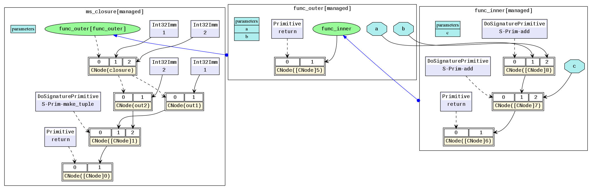

MindSpore IR (MindIR)¶
Linux Windows Framework Development Intermediate Expert Contributor

Overview¶
An intermediate representation (IR) is a representation of a program between the source and target languages, which facilitates program analysis and optimization for the compiler. Therefore, the IR design needs to consider the difficulty in converting the source language to the target language, as well as the ease-of-use and performance of program analysis and optimization.
MindSpore IR (MindIR) is a function-style IR based on graph representation. Its core purpose is to serve automatic differential transformation. Automatic differentiation uses the transformation method based on the function-style programming framework. Therefore, IR uses the semantics close to that of the ANF function. In addition, a manner of representation based on an explicit dependency graph is used by referring to excellent designs of Sea of Nodes[1] and Thorin[2].
Syntax¶
ANF is a simple IR commonly used during functional programming. The ANF syntax is defined as follows:
<aexp> ::= NUMBER | STRING | VAR | BOOLEAN | PRIMOP
| (lambda (VAR …) <exp>)
<cexp> ::= (<aexp> <aexp> …)
| (if <aexp> <exp> <exp>)
<exp> ::= (let ([VAR <cexp>]) <exp>) | <cexp> | <aexp>
Expressions in the ANF are classified into atomic expressions (aexp) and compound expressions (cexp). An atomic expression indicates a constant value, a variable, or an anonymous function. A compound expression consists of multiple atomic expressions, indicating that an anonymous function or primitive function call. The first input expression of a compound expression is the called function, and the other input expressions are the called parameters.
The syntax of MindIR is inherited from the ANF and is defined as follows:
<ANode> ::= <ValueNode> | <ParameterNode>
<ParameterNode> ::= Parameter
<ValueNode> ::= Scalar | Named | Tensor | Type | Shape
| Primitive | MetaFuncGraph | FuncGraph
<CNode> ::= (<AnfNode> …)
<AnfNode> ::= <CNode> | <ANode>
ANode in a MindIR corresponds to the atomic expression of ANF. ANode has two subclasses: ValueNode and ParameterNode. ValueNode refers to a constant node, which can carry a constant value (such as a scalar, symbol, tensor, type, and dimension), a primitive function (Primitive), a metafunction (MetaFuncGraph), or a common function (FuncGraph). In functional programming, the function definition itself is a value. ParameterNode refers to a parameter node, which indicates the formal parameter of a function.
CNode in a MindIR corresponds to the compound expression of ANF, indicating a function call.
During automatic differentiation of MindSpore, the gradient contribution of ParameterNode and CNode are calculated, and the final gradient of ParameterNode is returned. The gradient of ValueNode is not calculated.
Example¶
The following uses a program code segment as an example to help you understand MindIR.
def func(x, y):
return x / y
@ms_function
def test_f(x, y):
a = x - 1
b = a + y
c = b * func(a, b)
return c
The ANF corresponding to the Python code is as follows:
lambda (x, y)
let a = x - 1 in
let b = a + y in
let func = lambda (x, y)
let ret = x / y in
ret end in
let %1 = func(a, b) in
let c = b * %1 in
c end
The corresponding MindIR is ir.dot.

In a MindIR, a function graph (FuncGraph) indicates the definition of a common function. A directed acyclic graph (DAG) usually consists of ParameterNode, ValueNode, and CNode, which clearly shows the calculation process from parameters to return values. As shown in the preceding figure, the test_f and func functions in the Python code are converted into two function graphs. The x and y parameters are converted into ParameterNode in the function graphs, and each expression is converted into a CNode. The first input of CNode links to the called functions, for example, add, func, and return in the figure. It should be noted that these nodes are all ValueNode because they are considered as constant function values. Other input of CNode links to the called parameters. The parameter values can be obtained from the ParameterNode, ValueNode, and other CNode.
In the ANF, each expression is bound as a variable by using the let expression, and the dependency on the expression output is represented by referencing the variable. In the MindIR, each expression is bound as a node, and the dependency is represented by using the directed edges between nodes.
Saving IR¶
context.set_context(save_graphs=True) is used to save the intermediate code in each compilation phase. The intermediate code can be saved in two formats. One is the text format with the suffix .ir, and the other is the graphical format with the suffix .dot. When the network scale is small, you are advised to use the graphical format that is more intuitive. When the network scale is large, you are advised to use the text format that is more efficient.
You can run the graphviz command to convert a .dot file to the picture format. For example, you can run the dot -Tpng *.dot -o *.png command to convert a .dot file to a .png file.
Function-style Semantics¶
Compared with traditional computational graphs, MindIR can not only express data dependency between operators, but also express rich function-style semantics.
Higher-Order Functions¶
In a MindIR, a function is defined by a subgraph. However, the function itself can be transferred as the input or output of other higher-order functions.
In the following simple example, the f function is transferred as a parameter into the g function. Therefore, the g function is a higher-order function that receives function input, and the actual call site of the f function is inside the g function.
@ms_function
def hof(x):
def f(x):
return x + 3
def g(function, x):
return function(x) * function(x)
res = g(f, x)
return res
The corresponding MindIR is hof.dot.

In the actual network training scripts, the automatic derivation generic function GradOperation and Partial and HyperMap that are commonly used in the optimizer are typical high-order functions. Higher-order semantics greatly improve the flexibility and simplicity of MindSpore representations.
Control Flows¶
In a MindIR, control flows are expressed in the form of high-order function selection and calling. This form transforms a control flow into a data flow of higher-order functions, making the automatic differential algorithm more powerful. It not only supports automatic differentiation of data flows, but also supports automatic differentiation of control flows such as conditional jumps, loops, and recursion.
The following uses a simple Fibonacci instance as an example.
@ms_function
def fibonacci(n):
if(n < 1):
return 0
elif(n == 1):
return 1
else:
return fibonacci(n-1) + fibonacci(n-2)
The corresponding MindIR is cf.dot.

fibonacci is a top-level function graph. Two function graphs at the top level are selected and called by switch. ✓fibonacci is the True branch of the first if, and ✗fibonacci is the False branch of the first if. ✓✗fibonacci called in ✗fibonacci is the True branch of elif, and ✗✗fibonacci is the False branch of elif. The key is, in a MindIR, conditional jumps and recursion are represented in the form of higher-order control flows. For example, ✓✗fibonacci and ✗fibonacci are transferred in as parameters of the switch operator. switch selects a function as the return value based on the condition parameter. In this way, switch performs a binary selection operation on the input functions as common values and does not call the functions. The real function call is completed on CNode following switch.
Free Variables and Closures¶
Closure is a programming language feature that refers to the combination of code blocks and scope environment. A free variable refers to a variable in the scope environment referenced in a code block instead of a local variable. In a MindIR, a code block is represented as a function graph. The scope environment can be considered as the context where the function is called. The capture method of free variables is value copy instead of reference.
A typical closure instance is as follows:
@ms_function
def func_outer(a, b):
def func_inner(c):
return a + b + c
return func_inner
@ms_function
def ms_closure():
closure = func_outer(1, 2)
out1 = closure(1)
out2 = closure(2)
return out1, out2
The corresponding MindIR is closure.dot. 
In the example, a and b are free variables because the variables a and b in func_inner are parameters defined in the referenced parent graph func_outer. The variable closure is a closure, which is the combination of the function func_inner and its context func_outer(1, 2). Therefore, the result of out1 is 4, which is equivalent to 1+2+1, and the result of out2 is 5, which is equivalent to 1+2+2.
References¶
[1] C. Click and M. Paleczny. A simple graph-based intermediate representation. SIGPLAN Not., 30:35–49, March 1995.
[2] Roland Leißa, Marcel Köster, and Sebastian Hack. A graph-based higher-order intermediate representation. In Proceedings of the 13th Annual IEEE/ACM International Symposium on Code Generation and Optimization, pages 202–212. IEEE Computer Society, 2015.